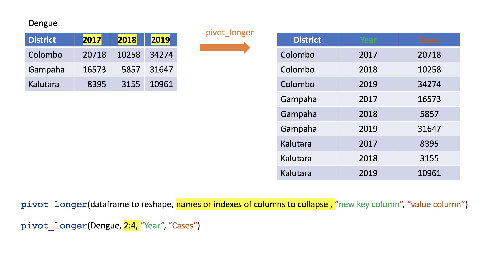
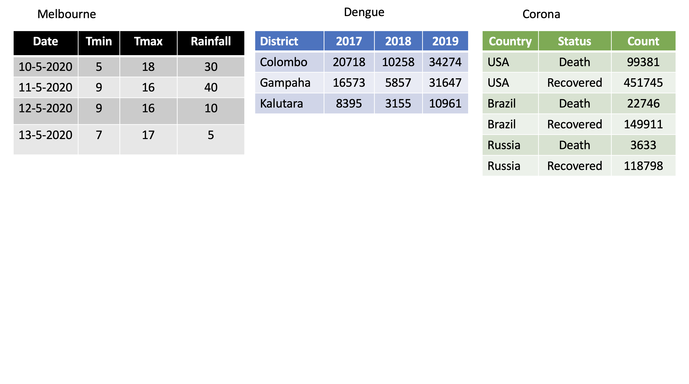
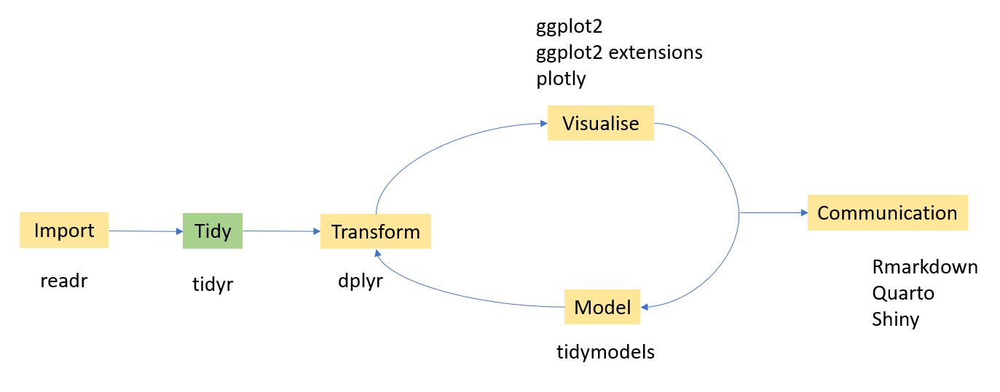
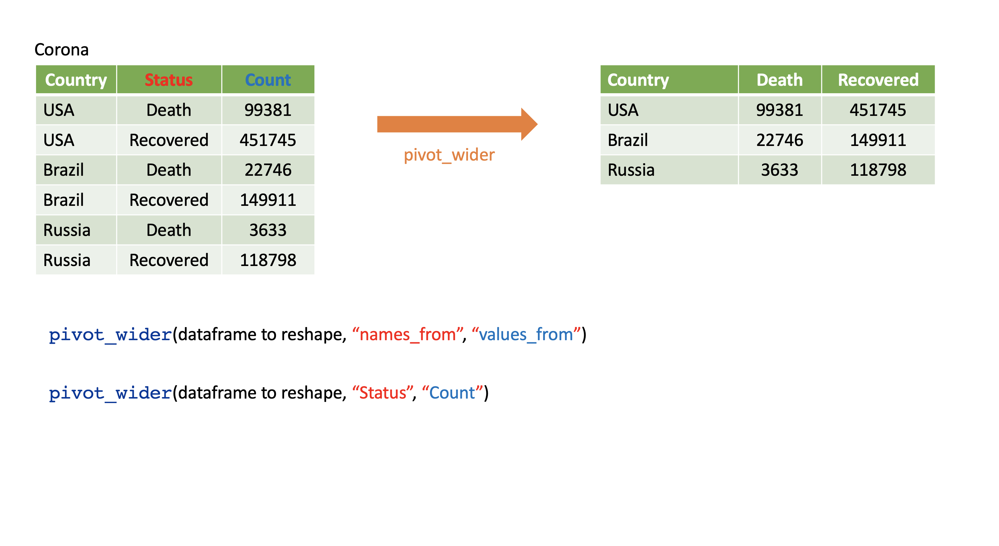
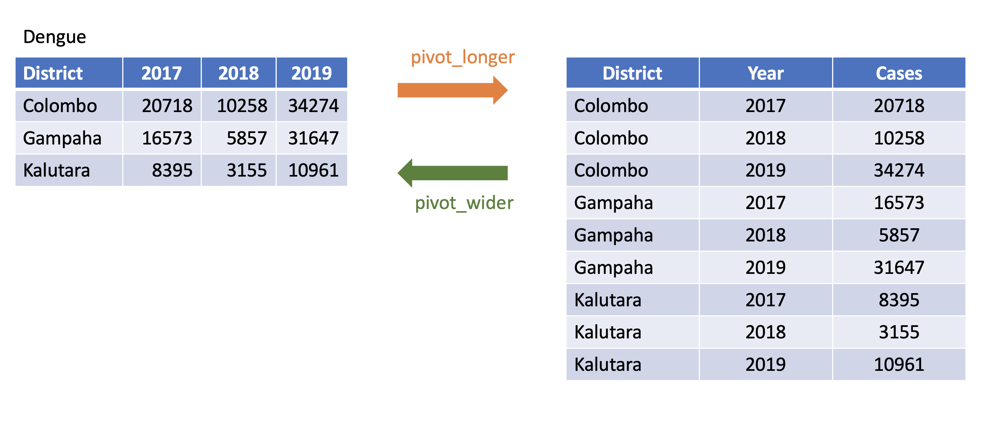
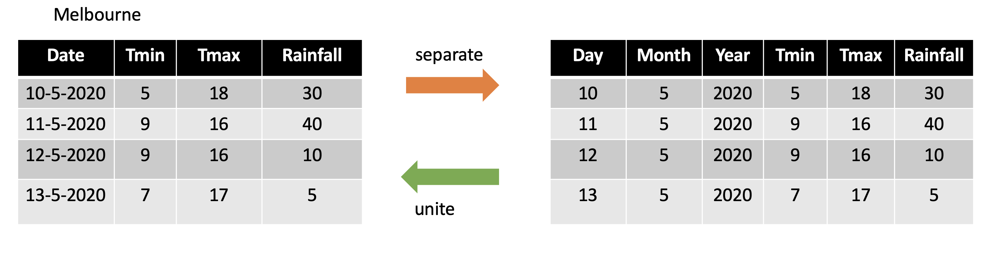
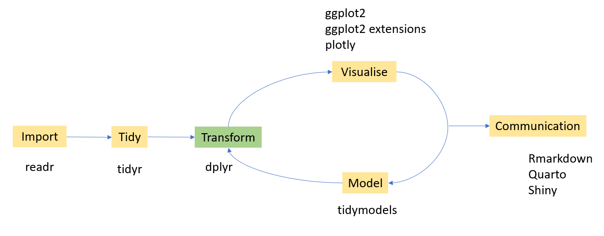

8 Data Wrangling
8.1 Tidy Data
Each variable is placed in its column
Each observation is placed in its own row
Each value is placed in its own cell
8.1.1 Which data frames are tidy?

8.2 Reshaping data with tidyr

How to reshape your data in order to make the analysis easier?
We are going to learn four main functions in the tidyr package.
pivot_wider
pivot_longer
seperate
unite
Input and Output type for tidyr functions
Main input: data frame or tibble.
Output: tibble
8.2.1 pivot_longer()
Turns columns into rows.
From wide format to long format.
library(tidyverse)
dengue <- tibble( dist = c("Colombo", "Gampaha", "Kalutara"),
'2017' = c(20718, 10258, 34274),
'2018' = c(16573, 5857, 31647),
'2019' = c(8395, 3155, 10961));
dengue# A tibble: 3 × 4
dist `2017` `2018` `2019`
<chr> <dbl> <dbl> <dbl>
1 Colombo 20718 16573 8395
2 Gampaha 10258 5857 3155
3 Kalutara 34274 31647 10961dengue %>%
pivot_longer(2:4,
names_to="Year",
values_to = "Dengue counts")# A tibble: 9 × 3
dist Year `Dengue counts`
<chr> <chr> <dbl>
1 Colombo 2017 20718
2 Colombo 2018 16573
3 Colombo 2019 8395
4 Gampaha 2017 10258
5 Gampaha 2018 5857
6 Gampaha 2019 3155
7 Kalutara 2017 34274
8 Kalutara 2018 31647
9 Kalutara 2019 109618.2.2 pivot_wider()
- From long to wide format.

Corona <- tibble(
country = rep(c("USA", "Brazil", "Russia"), each=2),
status = rep(c("Death", "Recovered"), 3),
count = c(99381, 451745, 22746, 149911, 3633, 118798))Corona # A tibble: 6 × 3
country status count
<chr> <chr> <dbl>
1 USA Death 99381
2 USA Recovered 451745
3 Brazil Death 22746
4 Brazil Recovered 149911
5 Russia Death 3633
6 Russia Recovered 118798Corona %>%
pivot_wider(names_from=status,
values_from=count)# A tibble: 3 × 3
country Death Recovered
<chr> <dbl> <dbl>
1 USA 99381 451745
2 Brazil 22746 149911
3 Russia 3633 1187988.2.2.1 Assign a name to the new dataset
corona_wide_format <- Corona %>%
pivot_wider(names_from=status,
values_from=count)
corona_wide_format # A tibble: 3 × 3
country Death Recovered
<chr> <dbl> <dbl>
1 USA 99381 451745
2 Brazil 22746 149911
3 Russia 3633 1187988.2.2.2 pivot_longer vs pivot_wider

8.2.2.3 Dealing with missing values
# A tibble: 7 × 3
year quarter income
<dbl> <dbl> <dbl>
1 2015 1 2
2 2015 2 NA
3 2015 3 3
4 2015 4 NA
5 2016 2 4
6 2016 3 5
7 2016 4 6profit %>%
pivot_wider(names_from = year, values_from = income)# A tibble: 4 × 3
quarter `2015` `2016`
<dbl> <dbl> <dbl>
1 1 2 NA
2 2 NA 4
3 3 3 5
4 4 NA 6Remove missing values
profit %>%
pivot_wider(names_from = year, values_from = income) %>%
pivot_longer(
cols = c(`2015`, `2016`),
names_to = "year",
values_to = "income",
values_drop_na = TRUE
)# A tibble: 5 × 3
quarter year income
<dbl> <chr> <dbl>
1 1 2015 2
2 2 2016 4
3 3 2015 3
4 3 2016 5
5 4 2016 68.2.3 separate()
- Separate one column into several columns.
Melbourne <-
tibble(Date = c("10-5-2020", "11-5-2020", "12-5-2020","13-5-2020"),
Tmin = c(5, 9, 9, 7), Tmax = c(18, 16, 16, 17),
Rainfall= c(30, 40, 10, 5)); Melbourne# A tibble: 4 × 4
Date Tmin Tmax Rainfall
<chr> <dbl> <dbl> <dbl>
1 10-5-2020 5 18 30
2 11-5-2020 9 16 40
3 12-5-2020 9 16 10
4 13-5-2020 7 17 5Melbourne %>% separate(Date, into=c("day", "month", "year"), sep="-")# A tibble: 4 × 6
day month year Tmin Tmax Rainfall
<chr> <chr> <chr> <dbl> <dbl> <dbl>
1 10 5 2020 5 18 30
2 11 5 2020 9 16 40
3 12 5 2020 9 16 10
4 13 5 2020 7 17 5df <- data.frame(x = c(NA, "a.b", "a.d", "b.c"))
df x
1 <NA>
2 a.b
3 a.d
4 b.cdf %>% separate(x, c("Text1", "Text2")) Text1 Text2
1 <NA> <NA>
2 a b
3 a d
4 b ctbl <- tibble(input = c("a", "a b", "a-b c", NA))
tbl# A tibble: 4 × 1
input
<chr>
1 a
2 a b
3 a-b c
4 <NA> tbl %>%
separate(input, c("Input1", "Input2"))Warning: Expected 2 pieces. Additional pieces discarded in 1 rows [3].Warning: Expected 2 pieces. Missing pieces filled with `NA` in 1 rows [1].# A tibble: 4 × 2
Input1 Input2
<chr> <chr>
1 a <NA>
2 a b
3 a b
4 <NA> <NA> tbl <- tibble(input = c("a", "a b", "a-b c", NA)); tbl# A tibble: 4 × 1
input
<chr>
1 a
2 a b
3 a-b c
4 <NA> tbl %>% separate(input, c("Input1", "Input2", "Input3"))Warning: Expected 3 pieces. Missing pieces filled with `NA` in 2 rows [1, 2].# A tibble: 4 × 3
Input1 Input2 Input3
<chr> <chr> <chr>
1 a <NA> <NA>
2 a b <NA>
3 a b c
4 <NA> <NA> <NA> 8.2.4 unite()
- Unite several columns into one.
projects <- tibble(
Country = c("USA", "USA", "AUS", "AUS"),
State = c("LA", "CO", "VIC", "NSW"),
Cost = c(1000, 11000, 20000,30000)
)
projects# A tibble: 4 × 3
Country State Cost
<chr> <chr> <dbl>
1 USA LA 1000
2 USA CO 11000
3 AUS VIC 20000
4 AUS NSW 30000# A tibble: 4 × 3
Country State Cost
<chr> <chr> <dbl>
1 USA LA 1000
2 USA CO 11000
3 AUS VIC 20000
4 AUS NSW 30000projects %>% unite("Location", c("State", "Country"))# A tibble: 4 × 2
Location Cost
<chr> <dbl>
1 LA_USA 1000
2 CO_USA 11000
3 VIC_AUS 20000
4 NSW_AUS 30000Specify the separator that you want to separate
projects %>% unite("Location", c("State", "Country"),
sep="-")# A tibble: 4 × 2
Location Cost
<chr> <dbl>
1 LA-USA 1000
2 CO-USA 11000
3 VIC-AUS 20000
4 NSW-AUS 300008.2.4.1 separate vs unite

8.3 Data minipulation with dplyr

Under data manipulation with dplyr we will learn six main functions in the dplyr package. They are
filterselectmutatesummarisearrangegroup_byrename
8.3.1 Dataset used for demonstrations
library(gapminder)
str(gapminder)tibble [1,704 × 6] (S3: tbl_df/tbl/data.frame)
$ country : Factor w/ 142 levels "Afghanistan",..: 1 1 1 1 1 1 1 1 1 1 ...
$ continent: Factor w/ 5 levels "Africa","Americas",..: 3 3 3 3 3 3 3 3 3 3 ...
$ year : int [1:1704] 1952 1957 1962 1967 1972 1977 1982 1987 1992 1997 ...
$ lifeExp : num [1:1704] 28.8 30.3 32 34 36.1 ...
$ pop : int [1:1704] 8425333 9240934 10267083 11537966 13079460 14880372 12881816 13867957 16317921 22227415 ...
$ gdpPercap: num [1:1704] 779 821 853 836 740 ...head(gapminder)# A tibble: 6 × 6
country continent year lifeExp pop gdpPercap
<fct> <fct> <int> <dbl> <int> <dbl>
1 Afghanistan Asia 1952 28.8 8425333 779.
2 Afghanistan Asia 1957 30.3 9240934 821.
3 Afghanistan Asia 1962 32.0 10267083 853.
4 Afghanistan Asia 1967 34.0 11537966 836.
5 Afghanistan Asia 1972 36.1 13079460 740.
6 Afghanistan Asia 1977 38.4 14880372 786.glimpse(gapminder)Rows: 1,704
Columns: 6
$ country <fct> "Afghanistan", "Afghanistan", "Afghanistan", "Afghanistan", …
$ continent <fct> Asia, Asia, Asia, Asia, Asia, Asia, Asia, Asia, Asia, Asia, …
$ year <int> 1952, 1957, 1962, 1967, 1972, 1977, 1982, 1987, 1992, 1997, …
$ lifeExp <dbl> 28.801, 30.332, 31.997, 34.020, 36.088, 38.438, 39.854, 40.8…
$ pop <int> 8425333, 9240934, 10267083, 11537966, 13079460, 14880372, 12…
$ gdpPercap <dbl> 779.4453, 820.8530, 853.1007, 836.1971, 739.9811, 786.1134, …tbl_df(gapminder)Warning: `tbl_df()` was deprecated in dplyr 1.0.0.
ℹ Please use `tibble::as_tibble()` instead.# A tibble: 1,704 × 6
country continent year lifeExp pop gdpPercap
<fct> <fct> <int> <dbl> <int> <dbl>
1 Afghanistan Asia 1952 28.8 8425333 779.
2 Afghanistan Asia 1957 30.3 9240934 821.
3 Afghanistan Asia 1962 32.0 10267083 853.
4 Afghanistan Asia 1967 34.0 11537966 836.
5 Afghanistan Asia 1972 36.1 13079460 740.
6 Afghanistan Asia 1977 38.4 14880372 786.
7 Afghanistan Asia 1982 39.9 12881816 978.
8 Afghanistan Asia 1987 40.8 13867957 852.
9 Afghanistan Asia 1992 41.7 16317921 649.
10 Afghanistan Asia 1997 41.8 22227415 635.
# ℹ 1,694 more rowslibrary(skimr)
skim(gapminder)8.3.2 filter
Picks observations by their values.
Takes logical expressions and returns the rows for which all are
TRUE.
filter(gapminder, lifeExp < 50)# A tibble: 491 × 6
country continent year lifeExp pop gdpPercap
<fct> <fct> <int> <dbl> <int> <dbl>
1 Afghanistan Asia 1952 28.8 8425333 779.
2 Afghanistan Asia 1957 30.3 9240934 821.
3 Afghanistan Asia 1962 32.0 10267083 853.
4 Afghanistan Asia 1967 34.0 11537966 836.
5 Afghanistan Asia 1972 36.1 13079460 740.
6 Afghanistan Asia 1977 38.4 14880372 786.
7 Afghanistan Asia 1982 39.9 12881816 978.
8 Afghanistan Asia 1987 40.8 13867957 852.
9 Afghanistan Asia 1992 41.7 16317921 649.
10 Afghanistan Asia 1997 41.8 22227415 635.
# ℹ 481 more rows# gapminder %>% filter(country == "Sri Lanka")
filter(gapminder, country == "Sri Lanka")# A tibble: 12 × 6
country continent year lifeExp pop gdpPercap
<fct> <fct> <int> <dbl> <int> <dbl>
1 Sri Lanka Asia 1952 57.6 7982342 1084.
2 Sri Lanka Asia 1957 61.5 9128546 1073.
3 Sri Lanka Asia 1962 62.2 10421936 1074.
4 Sri Lanka Asia 1967 64.3 11737396 1136.
5 Sri Lanka Asia 1972 65.0 13016733 1213.
6 Sri Lanka Asia 1977 65.9 14116836 1349.
7 Sri Lanka Asia 1982 68.8 15410151 1648.
8 Sri Lanka Asia 1987 69.0 16495304 1877.
9 Sri Lanka Asia 1992 70.4 17587060 2154.
10 Sri Lanka Asia 1997 70.5 18698655 2664.
11 Sri Lanka Asia 2002 70.8 19576783 3015.
12 Sri Lanka Asia 2007 72.4 20378239 3970.filter(gapminder, country %in% c("Sri Lanka", "Australia"))# A tibble: 24 × 6
country continent year lifeExp pop gdpPercap
<fct> <fct> <int> <dbl> <int> <dbl>
1 Australia Oceania 1952 69.1 8691212 10040.
2 Australia Oceania 1957 70.3 9712569 10950.
3 Australia Oceania 1962 70.9 10794968 12217.
4 Australia Oceania 1967 71.1 11872264 14526.
5 Australia Oceania 1972 71.9 13177000 16789.
6 Australia Oceania 1977 73.5 14074100 18334.
7 Australia Oceania 1982 74.7 15184200 19477.
8 Australia Oceania 1987 76.3 16257249 21889.
9 Australia Oceania 1992 77.6 17481977 23425.
10 Australia Oceania 1997 78.8 18565243 26998.
# ℹ 14 more rowsfilter(gapminder, country %in% c("Sri Lanka", "Australia")) %>%
head()# A tibble: 6 × 6
country continent year lifeExp pop gdpPercap
<fct> <fct> <int> <dbl> <int> <dbl>
1 Australia Oceania 1952 69.1 8691212 10040.
2 Australia Oceania 1957 70.3 9712569 10950.
3 Australia Oceania 1962 70.9 10794968 12217.
4 Australia Oceania 1967 71.1 11872264 14526.
5 Australia Oceania 1972 71.9 13177000 16789.
6 Australia Oceania 1977 73.5 14074100 18334.filter(gapminder, country %in% c("Sri Lanka", "Australia")) %>%
tail()# A tibble: 6 × 6
country continent year lifeExp pop gdpPercap
<fct> <fct> <int> <dbl> <int> <dbl>
1 Sri Lanka Asia 1982 68.8 15410151 1648.
2 Sri Lanka Asia 1987 69.0 16495304 1877.
3 Sri Lanka Asia 1992 70.4 17587060 2154.
4 Sri Lanka Asia 1997 70.5 18698655 2664.
5 Sri Lanka Asia 2002 70.8 19576783 3015.
6 Sri Lanka Asia 2007 72.4 20378239 3970.8.3.3 select
- Picks variables by their names.
head(gapminder, 3)# A tibble: 3 × 6
country continent year lifeExp pop gdpPercap
<fct> <fct> <int> <dbl> <int> <dbl>
1 Afghanistan Asia 1952 28.8 8425333 779.
2 Afghanistan Asia 1957 30.3 9240934 821.
3 Afghanistan Asia 1962 32.0 10267083 853.select(gapminder, year:gdpPercap)# A tibble: 1,704 × 4
year lifeExp pop gdpPercap
<int> <dbl> <int> <dbl>
1 1952 28.8 8425333 779.
2 1957 30.3 9240934 821.
3 1962 32.0 10267083 853.
4 1967 34.0 11537966 836.
5 1972 36.1 13079460 740.
6 1977 38.4 14880372 786.
7 1982 39.9 12881816 978.
8 1987 40.8 13867957 852.
9 1992 41.7 16317921 649.
10 1997 41.8 22227415 635.
# ℹ 1,694 more rowsselect(gapminder, year, gdpPercap)# A tibble: 1,704 × 2
year gdpPercap
<int> <dbl>
1 1952 779.
2 1957 821.
3 1962 853.
4 1967 836.
5 1972 740.
6 1977 786.
7 1982 978.
8 1987 852.
9 1992 649.
10 1997 635.
# ℹ 1,694 more rowsselect(gapminder, -c(year, gdpPercap))# A tibble: 1,704 × 4
country continent lifeExp pop
<fct> <fct> <dbl> <int>
1 Afghanistan Asia 28.8 8425333
2 Afghanistan Asia 30.3 9240934
3 Afghanistan Asia 32.0 10267083
4 Afghanistan Asia 34.0 11537966
5 Afghanistan Asia 36.1 13079460
6 Afghanistan Asia 38.4 14880372
7 Afghanistan Asia 39.9 12881816
8 Afghanistan Asia 40.8 13867957
9 Afghanistan Asia 41.7 16317921
10 Afghanistan Asia 41.8 22227415
# ℹ 1,694 more rowsselect(gapminder, -(year:gdpPercap))# A tibble: 1,704 × 2
country continent
<fct> <fct>
1 Afghanistan Asia
2 Afghanistan Asia
3 Afghanistan Asia
4 Afghanistan Asia
5 Afghanistan Asia
6 Afghanistan Asia
7 Afghanistan Asia
8 Afghanistan Asia
9 Afghanistan Asia
10 Afghanistan Asia
# ℹ 1,694 more rows8.3.4 mutate
- Creates new variables with functions of existing variables
gapminder %>% mutate(gdp = pop * gdpPercap)# A tibble: 1,704 × 7
country continent year lifeExp pop gdpPercap gdp
<fct> <fct> <int> <dbl> <int> <dbl> <dbl>
1 Afghanistan Asia 1952 28.8 8425333 779. 6567086330.
2 Afghanistan Asia 1957 30.3 9240934 821. 7585448670.
3 Afghanistan Asia 1962 32.0 10267083 853. 8758855797.
4 Afghanistan Asia 1967 34.0 11537966 836. 9648014150.
5 Afghanistan Asia 1972 36.1 13079460 740. 9678553274.
6 Afghanistan Asia 1977 38.4 14880372 786. 11697659231.
7 Afghanistan Asia 1982 39.9 12881816 978. 12598563401.
8 Afghanistan Asia 1987 40.8 13867957 852. 11820990309.
9 Afghanistan Asia 1992 41.7 16317921 649. 10595901589.
10 Afghanistan Asia 1997 41.8 22227415 635. 14121995875.
# ℹ 1,694 more rows8.3.5 summarise(British) or summarize (US)
- Collapse many values down to a single summary
gapminder %>%
summarise(
lifeExp_mean=mean(lifeExp),
pop_mean=mean(pop),
gdpPercap_mean=mean(gdpPercap))# A tibble: 1 × 3
lifeExp_mean pop_mean gdpPercap_mean
<dbl> <dbl> <dbl>
1 59.5 29601212. 7215.8.3.6 arrange
- Reorder the rows
arrange(gapminder, desc(lifeExp))# A tibble: 1,704 × 6
country continent year lifeExp pop gdpPercap
<fct> <fct> <int> <dbl> <int> <dbl>
1 Japan Asia 2007 82.6 127467972 31656.
2 Hong Kong, China Asia 2007 82.2 6980412 39725.
3 Japan Asia 2002 82 127065841 28605.
4 Iceland Europe 2007 81.8 301931 36181.
5 Switzerland Europe 2007 81.7 7554661 37506.
6 Hong Kong, China Asia 2002 81.5 6762476 30209.
7 Australia Oceania 2007 81.2 20434176 34435.
8 Spain Europe 2007 80.9 40448191 28821.
9 Sweden Europe 2007 80.9 9031088 33860.
10 Israel Asia 2007 80.7 6426679 25523.
# ℹ 1,694 more rows8.3.7 group_by
- Takes an existing tibble and converts it into a grouped tibble where operations are performed “by group”. ungroup() removes grouping.
Japan_SL <- filter(gapminder, country %in% c("Japan", "Sri Lanka"))
Japan_SL %>% head()# A tibble: 6 × 6
country continent year lifeExp pop gdpPercap
<fct> <fct> <int> <dbl> <int> <dbl>
1 Japan Asia 1952 63.0 86459025 3217.
2 Japan Asia 1957 65.5 91563009 4318.
3 Japan Asia 1962 68.7 95831757 6577.
4 Japan Asia 1967 71.4 100825279 9848.
5 Japan Asia 1972 73.4 107188273 14779.
6 Japan Asia 1977 75.4 113872473 16610.Japan_SL_grouped <- Japan_SL %>% group_by(country)
Japan_SL_grouped# A tibble: 24 × 6
# Groups: country [2]
country continent year lifeExp pop gdpPercap
<fct> <fct> <int> <dbl> <int> <dbl>
1 Japan Asia 1952 63.0 86459025 3217.
2 Japan Asia 1957 65.5 91563009 4318.
3 Japan Asia 1962 68.7 95831757 6577.
4 Japan Asia 1967 71.4 100825279 9848.
5 Japan Asia 1972 73.4 107188273 14779.
6 Japan Asia 1977 75.4 113872473 16610.
7 Japan Asia 1982 77.1 118454974 19384.
8 Japan Asia 1987 78.7 122091325 22376.
9 Japan Asia 1992 79.4 124329269 26825.
10 Japan Asia 1997 80.7 125956499 28817.
# ℹ 14 more rowsJapan_SL %>% summarise(mean_lifeExp=mean(lifeExp))# A tibble: 1 × 1
mean_lifeExp
<dbl>
1 70.7Japan_SL_grouped %>% summarise(mean_lifeExp=mean(lifeExp))# A tibble: 2 × 2
country mean_lifeExp
<fct> <dbl>
1 Japan 74.8
2 Sri Lanka 66.58.3.8 rename
- Rename variables
head(gapminder, 3)# A tibble: 3 × 6
country continent year lifeExp pop gdpPercap
<fct> <fct> <int> <dbl> <int> <dbl>
1 Afghanistan Asia 1952 28.8 8425333 779.
2 Afghanistan Asia 1957 30.3 9240934 821.
3 Afghanistan Asia 1962 32.0 10267083 853.rename(gapminder, `life expectancy`=lifeExp,
population=pop) # new_name = old_name# A tibble: 1,704 × 6
country continent year `life expectancy` population gdpPercap
<fct> <fct> <int> <dbl> <int> <dbl>
1 Afghanistan Asia 1952 28.8 8425333 779.
2 Afghanistan Asia 1957 30.3 9240934 821.
3 Afghanistan Asia 1962 32.0 10267083 853.
4 Afghanistan Asia 1967 34.0 11537966 836.
5 Afghanistan Asia 1972 36.1 13079460 740.
6 Afghanistan Asia 1977 38.4 14880372 786.
7 Afghanistan Asia 1982 39.9 12881816 978.
8 Afghanistan Asia 1987 40.8 13867957 852.
9 Afghanistan Asia 1992 41.7 16317921 649.
10 Afghanistan Asia 1997 41.8 22227415 635.
# ℹ 1,694 more rows8.3.9 Combine multiple operations
Example 1
gapminder %>%
filter(country == 'China') %>% head(2)# A tibble: 2 × 6
country continent year lifeExp pop gdpPercap
<fct> <fct> <int> <dbl> <int> <dbl>
1 China Asia 1952 44 556263527 400.
2 China Asia 1957 50.5 637408000 576.Example 2
gapminder %>%
filter(country == 'China') %>% summarise(lifemax=max(lifeExp))# A tibble: 1 × 1
lifemax
<dbl>
1 73.0Example 3
gapminder %>%
filter(country == 'China') %>%
filter(lifeExp == max(lifeExp))# A tibble: 1 × 6
country continent year lifeExp pop gdpPercap
<fct> <fct> <int> <dbl> <int> <dbl>
1 China Asia 2007 73.0 1318683096 4959.Example 4
gapminder %>%
filter(continent == 'Asia') %>%
group_by(country) %>%
filter(lifeExp == max(lifeExp)) %>%
arrange(desc(year))# A tibble: 33 × 6
# Groups: country [33]
country continent year lifeExp pop gdpPercap
<fct> <fct> <int> <dbl> <int> <dbl>
1 Afghanistan Asia 2007 43.8 31889923 975.
2 Bahrain Asia 2007 75.6 708573 29796.
3 Bangladesh Asia 2007 64.1 150448339 1391.
4 Cambodia Asia 2007 59.7 14131858 1714.
5 China Asia 2007 73.0 1318683096 4959.
6 Hong Kong, China Asia 2007 82.2 6980412 39725.
7 India Asia 2007 64.7 1110396331 2452.
8 Indonesia Asia 2007 70.6 223547000 3541.
9 Iran Asia 2007 71.0 69453570 11606.
10 Israel Asia 2007 80.7 6426679 25523.
# ℹ 23 more rows8.4 Combine Data Sets
In this section we will learn different ways of koining the datasets.
Mutating joins
left_joinright_joininner_joinfull_join
Set operations
intersectunion
Binding
bind_rowsbind_cols
8.5 Mutating joins
8.5.1 left_join
first <- tibble(x1=c("A", "B", "C"), x2=c(1, 2, 3))
second <- tibble(x1=c("A", "B", "D"), x3=c("red", "yellow" , "green"))first# A tibble: 3 × 2
x1 x2
<chr> <dbl>
1 A 1
2 B 2
3 C 3second# A tibble: 3 × 2
x1 x3
<chr> <chr>
1 A red
2 B yellow
3 D green left_join(first, second, by="x1")# A tibble: 3 × 3
x1 x2 x3
<chr> <dbl> <chr>
1 A 1 red
2 B 2 yellow
3 C 3 <NA> 8.5.2 right_join
first <- tibble(x1=c("A", "B", "C"), x2=c(1, 2, 3))
second <- tibble(x1=c("A", "B", "D"), x3=c("red", "yellow" , "green"))first# A tibble: 3 × 2
x1 x2
<chr> <dbl>
1 A 1
2 B 2
3 C 3second# A tibble: 3 × 2
x1 x3
<chr> <chr>
1 A red
2 B yellow
3 D green right_join(first, second, by="x1")# A tibble: 3 × 3
x1 x2 x3
<chr> <dbl> <chr>
1 A 1 red
2 B 2 yellow
3 D NA green 8.5.3 inner_join
first <- tibble(x1=c("A", "B", "C"), x2=c(1, 2, 3))
second <- tibble(x1=c("A", "B", "D"), x3=c("red", "yellow" , "green"))first# A tibble: 3 × 2
x1 x2
<chr> <dbl>
1 A 1
2 B 2
3 C 3second# A tibble: 3 × 2
x1 x3
<chr> <chr>
1 A red
2 B yellow
3 D green inner_join(first, second, by="x1")# A tibble: 2 × 3
x1 x2 x3
<chr> <dbl> <chr>
1 A 1 red
2 B 2 yellow8.5.4 full_join
first <- tibble(x1=c("A", "B", "C"), x2=c(1, 2, 3))
second <- tibble(x1=c("A", "B", "D"), x3=c("red", "yellow" , "green"))first# A tibble: 3 × 2
x1 x2
<chr> <dbl>
1 A 1
2 B 2
3 C 3second# A tibble: 3 × 2
x1 x3
<chr> <chr>
1 A red
2 B yellow
3 D green full_join(first, second, by="x1")# A tibble: 4 × 3
x1 x2 x3
<chr> <dbl> <chr>
1 A 1 red
2 B 2 yellow
3 C 3 <NA>
4 D NA green 8.6 Set operations
Two compatible data sets. Column names are the same.
first <- tibble(x1=c("A", "B", "C"), x2=c(1, 2, 3))
second <- tibble(x1=c("D", "B", "C"), x2=c(10, 2, 3))first# A tibble: 3 × 2
x1 x2
<chr> <dbl>
1 A 1
2 B 2
3 C 3second# A tibble: 3 × 2
x1 x2
<chr> <dbl>
1 D 10
2 B 2
3 C 38.6.1 intersect
intersect(first, second)# A tibble: 2 × 2
x1 x2
<chr> <dbl>
1 B 2
2 C 38.6.2 union
union(first, second)# A tibble: 4 × 2
x1 x2
<chr> <dbl>
1 A 1
2 B 2
3 C 3
4 D 108.6.3 intersect: Two compatible data sets. Column names are the same but the values are different
first <- tibble(x1=c("A", "B", "C"), x2=c(1, 2, 3))
second <- tibble(x1=c("D", "B", "C"), x2=c(10, 20, 30))first# A tibble: 3 × 2
x1 x2
<chr> <dbl>
1 A 1
2 B 2
3 C 3second# A tibble: 3 × 2
x1 x2
<chr> <dbl>
1 D 10
2 B 20
3 C 30intersect(first, second)# A tibble: 0 × 2
# ℹ 2 variables: x1 <chr>, x2 <dbl>8.6.4 union: Two compatible data sets. Column names are the same but the values are different
union(first, second)# A tibble: 6 × 2
x1 x2
<chr> <dbl>
1 A 1
2 B 2
3 C 3
4 D 10
5 B 20
6 C 308.7 Binding operations
first <- tibble(x1=c("A", "B", "C"), x2=c(1, 2, 3))
second <- tibble(x1=c("D", "B", "C"), x2=c(10, 20, 30))first# A tibble: 3 × 2
x1 x2
<chr> <dbl>
1 A 1
2 B 2
3 C 3second# A tibble: 3 × 2
x1 x2
<chr> <dbl>
1 D 10
2 B 20
3 C 308.7.1 bind_rows
bind_rows(first, second)# A tibble: 6 × 2
x1 x2
<chr> <dbl>
1 A 1
2 B 2
3 C 3
4 D 10
5 B 20
6 C 308.7.2 bind_cols
bind_cols(first, second)# A tibble: 3 × 4
x1...1 x2...2 x1...3 x2...4
<chr> <dbl> <chr> <dbl>
1 A 1 D 10
2 B 2 B 20
3 C 3 C 308.8 Exercise
This exercise is based on the DStidy dataset from the DSjobtracker package in R. This dataset was compiled from job advertisements for roles like statisticians and data scientists. It includes information on job roles, required qualifications, technical and soft skills, tools, platforms, and other relevant criteria frequently mentioned in the job advertisements. Write R code to answer each question. Use the provided output to verify the correctness of your code.
- How many job advertisements mention both
RandPythonas required skills?
[1] 437- Which job categories require R but not Python?
Help: distinct function
# A tibble: 20 × 1
Job_Category
<chr>
1 Unimportant
2 Data Science
3 Data Science and Data Engineering
4 Data Analyst
5 <NA>
6 AI
7 Business/Systems Analysts
8 Computer/Information Technology
9 Science & Technology
10 Sciences
11 Statistics
12 Data science
13 Information Services
14 Analyst, Engineering and Information Technology
15 Research, Analyst, and Information Technology
16 Analyst
17 Administrative
18 Machine Learning
19 Data Analytics
20 Actuarial Science - What is the most common educational qualification required (BSc_needed, MSc_needed, PhD_needed) across all job categories?
# A tibble: 1 × 3
BSc MSc PhD
<int> <int> <int>
1 293 152 71- What is the average salary for job roles that require SQL, grouped by Job_Category?
# A tibble: 26 × 2
Job_Category avg_salary
<chr> <dbl>
1 Unimportant 11108498.
2 <NA> 4689542.
3 Machine Learning 108000
4 Data Analyst 107890
5 Data Science 102805.
6 AI 95000
7 Data Science and Data Engineering 78500
8 Data science 75125.
9 Research, Analyst, and Information Technology 70970.
10 Internet Publishing 70000
# ℹ 16 more rows- Calculate the proportion of job advertisements that require English by City.
# A tibble: 299 × 2
City Prop_English
<chr> <dbl>
1 Anaheim 1
2 Arges 1
3 Athens 1
4 Attiki 1
5 Berlin 1
6 Bugis 1
7 Calgary 1
8 Central Denmark 1
9 Chengdu 1
10 Darmstadt 1
# ℹ 289 more rows- Select only the columns: ID, Job_title, Company, and City.
# A tibble: 1,172 × 4
ID Job_title Company City
<dbl> <chr> <chr> <chr>
1 1 <NA> <NA> <NA>
2 2 Junior Data Scientist Dialog Axiata PLC Colo…
3 3 Engineer, Analytics & Data Science London Stock Exchang… Colo…
4 4 CI-Statistical Analyst/Business Analyst-CMB E.D. Bullard Company Colo…
5 5 DA-Data Analyst-CMB E.D. Bullard Company Colo…
6 6 Data Scientist Emirates Center for … Kual…
7 7 Principal HR Data Scientist BHP Group Limited Kual…
8 8 DV-Data Visualization & QA Specialist-CMB E.D. Bullard Company Colo…
9 9 Product Manager, Product Data Science Numerator Otta…
10 10 Associate Director, Data Science Phreesia Inc. Otta…
# ℹ 1,162 more rows- Filter the dataset to include only jobs that mention Python as a required skill.
# A tibble: 774 × 109
ID Consultant DateRetrieved DatePublished Job_title Company
<dbl> <chr> <dttm> <dttm> <chr> <chr>
1 1 Thiyanga 2020-08-05 00:00:00 NA <NA> <NA>
2 2 Jayani 2020-08-07 00:00:00 2020-07-31 00:00:00 Junior Data… Dialog…
3 3 Jayani 2020-08-07 00:00:00 2020-08-06 00:00:00 Engineer, A… London…
4 6 Jayani 2020-08-07 00:00:00 2020-08-13 00:00:00 Data Scient… Emirat…
5 7 Jayani 2020-08-13 00:00:00 2020-08-13 00:00:00 Principal H… BHP Gr…
6 10 Jayani 2020-08-12 00:00:00 2020-08-11 00:00:00 Associate D… Phrees…
7 13 Jayani 2020-08-13 00:00:00 2020-08-13 00:00:00 Data Scient… Visier…
8 17 Jayani 2020-08-13 00:00:00 2020-08-11 00:00:00 Data Scienc… Clearb…
9 18 Jayani 2020-08-13 00:00:00 2020-08-12 00:00:00 Marketing i… Yellow…
10 20 Jayani 2020-08-13 00:00:00 2020-08-13 00:00:00 Data Analyst Ernst …
# ℹ 764 more rows
# ℹ 103 more variables: R <dbl>, SAS <dbl>, SPSS <dbl>, Python <dbl>,
# MAtlab <dbl>, Scala <dbl>, `C#` <dbl>, `MS Word` <dbl>, `Ms Excel` <dbl>,
# `OLE/DB` <dbl>, `Ms Access` <dbl>, `Ms PowerPoint` <dbl>,
# Spreadsheets <dbl>, Data_visualization <dbl>, Presentation_Skills <dbl>,
# Communication <dbl>, BigData <dbl>, Data_warehouse <dbl>,
# cloud_storage <dbl>, Google_Cloud <dbl>, AWS <dbl>, …- Select all columns related to Microsoft Office tools.
# A tibble: 1,172 × 4
`MS Word` `Ms Excel` `Ms Access` `Ms PowerPoint`
<dbl> <dbl> <dbl> <dbl>
1 0 0 0 0
2 0 0 0 0
3 0 0 0 0
4 0 0 0 0
5 1 1 1 1
6 0 0 0 0
7 0 0 0 0
8 1 1 0 1
9 0 0 0 0
10 0 0 0 0
# ℹ 1,162 more rows- Filter jobs that were published in or after the year 2023.
Help: use year function in the lubridate package
# A tibble: 251 × 109
ID Consultant DateRetrieved DatePublished Job_title Company
<dbl> <chr> <dttm> <dttm> <chr> <chr>
1 1 Kavya 2023-01-05 18:30:00 2023-01-04 18:30:00 Senior Engi… DFCC B…
2 2 Kavya 2023-01-05 18:30:00 2023-01-04 18:30:00 Database En… <NA>
3 3 Kavya 2023-01-05 18:30:00 2023-01-03 18:30:00 Database Ad… Abans
4 4 Kavya 2023-01-05 18:30:00 2023-01-02 18:30:00 Consulting … George…
5 6 Kavya 2023-01-05 18:30:00 2023-01-05 18:30:00 Data Scient… LSEG
6 7 Kavya 2023-01-05 18:30:00 2023-01-05 18:30:00 D & A Azure… Ernst …
7 8 Kavya 2023-01-05 18:30:00 2023-01-04 18:30:00 Data Analyst Novels…
8 9 Kavya 2023-01-05 18:30:00 2023-01-04 18:30:00 Data Analyst ADA
9 10 Kavya 2023-01-05 18:30:00 2023-01-04 18:30:00 Machine Lea… Bestka…
10 12 Kavya 2023-01-05 18:30:00 2023-01-05 18:30:00 Data Scient… JKH
# ℹ 241 more rows
# ℹ 103 more variables: R <dbl>, SAS <dbl>, SPSS <dbl>, Python <dbl>,
# MAtlab <dbl>, Scala <dbl>, `C#` <dbl>, `MS Word` <dbl>, `Ms Excel` <dbl>,
# `OLE/DB` <dbl>, `Ms Access` <dbl>, `Ms PowerPoint` <dbl>,
# Spreadsheets <dbl>, Data_visualization <dbl>, Presentation_Skills <dbl>,
# Communication <dbl>, BigData <dbl>, Data_warehouse <dbl>,
# cloud_storage <dbl>, Google_Cloud <dbl>, AWS <dbl>, …- Filter the jobs where both PhD_needed and MSc_needed are 0.
# A tibble: 758 × 109
ID Consultant DateRetrieved DatePublished Job_title Company
<dbl> <chr> <dttm> <dttm> <chr> <chr>
1 1 Thiyanga 2020-08-05 00:00:00 NA <NA> <NA>
2 2 Jayani 2020-08-07 00:00:00 2020-07-31 00:00:00 Junior Data… Dialog…
3 3 Jayani 2020-08-07 00:00:00 2020-08-06 00:00:00 Engineer, A… London…
4 4 Jayani 2020-08-07 00:00:00 2020-07-24 00:00:00 CI-Statisti… E.D. B…
5 5 Jayani 2020-08-07 00:00:00 2020-07-24 00:00:00 DA-Data Ana… E.D. B…
6 7 Jayani 2020-08-13 00:00:00 2020-08-13 00:00:00 Principal H… BHP Gr…
7 8 Jayani 2020-08-07 00:00:00 2020-07-24 00:00:00 DV-Data Vis… E.D. B…
8 9 Jayani 2020-08-13 00:00:00 2020-08-13 00:00:00 Product Man… Numera…
9 10 Jayani 2020-08-12 00:00:00 2020-08-11 00:00:00 Associate D… Phrees…
10 11 Jayani 2020-08-13 00:00:00 2020-08-13 00:00:00 Data Engine… SDK
# ℹ 748 more rows
# ℹ 103 more variables: R <dbl>, SAS <dbl>, SPSS <dbl>, Python <dbl>,
# MAtlab <dbl>, Scala <dbl>, `C#` <dbl>, `MS Word` <dbl>, `Ms Excel` <dbl>,
# `OLE/DB` <dbl>, `Ms Access` <dbl>, `Ms PowerPoint` <dbl>,
# Spreadsheets <dbl>, Data_visualization <dbl>, Presentation_Skills <dbl>,
# Communication <dbl>, BigData <dbl>, Data_warehouse <dbl>,
# cloud_storage <dbl>, Google_Cloud <dbl>, AWS <dbl>, …- Filter out all rows where Salary is missing (NA).
# A tibble: 239 × 109
ID Consultant DateRetrieved DatePublished Job_title Company
<dbl> <chr> <dttm> <dttm> <chr> <chr>
1 12 Jayani 2020-08-13 00:00:00 2020-08-13 00:00:00 Data Analyst EPCOR …
2 24 Jayani 2020-08-13 00:00:00 2020-08-13 00:00:00 Data Scient… Elabra…
3 45 Jayani 2020-08-13 00:00:00 2020-08-11 00:00:00 Associate P… SnapHu…
4 52 Thimani 2020-08-07 00:00:00 2020-07-24 00:00:00 Data Scienc… Summit…
5 54 Thimani 2020-08-07 00:00:00 2020-08-01 00:00:00 Data Scient… PA con…
6 56 Thimani 2020-08-07 00:00:00 2020-07-31 00:00:00 Data Scient… Brilli…
7 57 Thimani 2020-08-07 00:00:00 2020-07-14 00:00:00 Data Scient… G-Rese…
8 58 Thimani 2020-08-07 00:00:00 2020-07-19 00:00:00 Manager-Dat… Biz2Cr…
9 62 Thimani 2020-08-09 00:00:00 2020-07-19 00:00:00 Senior Mana… Britis…
10 63 Thimani 2020-08-09 00:00:00 2020-07-23 00:00:00 VP, Data Sc… 7Park …
# ℹ 229 more rows
# ℹ 103 more variables: R <dbl>, SAS <dbl>, SPSS <dbl>, Python <dbl>,
# MAtlab <dbl>, Scala <dbl>, `C#` <dbl>, `MS Word` <dbl>, `Ms Excel` <dbl>,
# `OLE/DB` <dbl>, `Ms Access` <dbl>, `Ms PowerPoint` <dbl>,
# Spreadsheets <dbl>, Data_visualization <dbl>, Presentation_Skills <dbl>,
# Communication <dbl>, BigData <dbl>, Data_warehouse <dbl>,
# cloud_storage <dbl>, Google_Cloud <dbl>, AWS <dbl>, …- For each Experience_Category, compute the percentage of jobs that require Presentation_Skills.
# A tibble: 5 × 2
Experience_Category prop_presentation
<chr> <dbl>
1 More than 10 years 0.25
2 More than 2 and less than 5 years 0.306
3 More than 5 and less than 10 years 0.318
4 Two or less years 0.275
5 Unknown or Not needed 0.360